Metagenomic Report
Mini Chat RAG (beta)
¡Hola! Soy Geni, el asistente inteligente de GenoScribe. Estoy aquí para ayudarte a explorar de forma interactiva el contenido de este informe bioinformático.
Cuando me haces una pregunta, primero intento reconocer si coincide con alguno de los patrones o expresiones que conozco. Si encuentro una coincidencia, te responderé directamente con una respuesta predefinida, diseñada para ser rápida, clara e incluso un poco ingeniosa. Si no reconozco el patrón, entonces activo mis herramientas de búsqueda: genero representaciones vectoriales (embeddings) y busco los fragmentos más relevantes entre varios documentos —incluyendo el propio informe, archivos PDF y HTML externos, y sesiones de preguntas y respuestas (QA). A partir de esa información, creo un resumen que intenta ofrecerte una respuesta coherente y útil basada en el contenido existente.
Se debe tener en cuenta que este entorno es experimental. No utilizo grandes modelos de lenguaje, por lo que algunas respuestas pueden ser aproximadas o incompletas. El objetivo principal es facilitar una visualización rápida, comprensible y reproducible de la información contenida en los documentos, permitiendo una exploración más dinámica del informe.
Actualmente, los resultados pueden variar en precisión, ya que empleo modelos ligeros y locales para asegurar que la aplicación funcione en cualquier entorno sin necesidad de servidores externos. Sin embargo, la estructura del sistema está preparada para mejorar notablemente su rendimiento en el futuro mediante la integración con modelos más avanzados o APIs externas. Para comenzar, simplemente escribe tu pregunta en el campo inferior y deja que yo me encargue del resto. ¡Prometo poner todo mi código en ello!
Pestaña
Análisis 16S bioinformático completo
Sección 7
Predicción funcional (PICRUSt2 / Pycrust)
▼
Resumen
En esta sección se presentan los resultados de la predicción funcional de las comunidades microbianas a partir de los datos de metagenómica 16S, utilizando las herramientas PICRUSt2 y Pycrust. El objetivo principal es inferir la abundancia de rutas metabólicas (pathways) y funciones biológicas presentes en las muestras, proporcionando una visión integral de la funcionalidad microbiana y permitiendo identificar diferencias entre los grupos experimentales.
La sección se estructura en cuatro bloques principales:
- 7.1. PCA global de pathways ⇒ Se realiza un análisis de componentes principales (PCA) sobre las abundancias relativas de pathways predichos. Esto permite visualizar la variación funcional global entre todas las muestras del estudio, identificando patrones de agrupamiento y posibles similitudes o diferencias funcionales entre grupos. La representación incluye los primeros componentes principales (PC1 y PC2), puntos coloreados según el grupo experimental, elipses de confianza y distribuciones marginales, facilitando una interpretación rápida y clara de la estructura funcional global.
- 7.2. Análisis diferencial global (ALDEx2) ⇒ Se aplican métodos estadísticos globales para identificar pathways diferencialmente abundantes entre todos los grupos experimentales. Se incluyen mapas de calor basados en el test de Kruskal-Wallis y en modelos lineales generalizados (GLM), así como gráficos de p-values que resaltan las rutas con diferencias significativas. Este análisis permite detectar patrones funcionales globales y establecer una base para comparaciones más detalladas entre grupos específicos.
- 7.3. Comparaciones específicas por pares (MetagenomeSeq) ⇒ Se realizan comparaciones dirigidas entre pares de grupos experimentales utilizando MetagenomeSeq. Cada gráfico de esta subsección muestra la abundancia relativa de pathways seleccionados según criterios de significancia estadística para esa comparación específica. Esto permite identificar funciones metabólicas que distinguen a un grupo de otro de forma más focalizada y detalla las rutas responsables de diferencias funcionales o fenotípicas específicas.
-
7.4. PCA funcional por pares (
pathway_pca_MetagenomeSeq_*) ⇒ Se realizan PCA sobre las abundancias relativas de pathways para cada comparación por pares. Estas figuras muestran cómo se agrupan las muestras de dos grupos específicos, permitiendo visualizar la separación funcional entre ellos y la consistencia de los patrones observados en los análisis de MetagenomeSeq. En algunos casos, los PCA pueden aparecer vacíos si no se detectan pathways diferencialmente abundantes o si la variabilidad funcional es insuficiente para generar una representación informativa.
En conjunto, esta sección proporciona una visión integral de la funcionalidad metabólica de las comunidades microbianas estudiadas. Se combinan análisis globales y específicos, representaciones estadísticas y visualizaciones gráficas para permitir interpretar patrones funcionales generales, detectar rutas clave que diferencian grupos y explorar agrupamientos funcionales por pares. El propósito final es facilitar la comprensión de las funciones metabólicas potenciales asociadas a cada grupo experimental y servir como base para futuras interpretaciones biológicas o experimentales.
Tabla de contenidos de esta sección
7. Predicción funcional (PICRUSt2 / Pycrust)
En esta sección se presentan los resultados del análisis de predicción funcional de las comunidades microbianas utilizando PICRUSt2 (Phylogenetic Investigation of Communities by Reconstruction of Unobserved States, versión 2). Esta herramienta permite inferir el potencial funcional de las comunidades microbianas a partir de datos de secuenciación 16S rRNA, complementando así la información taxonómica obtenida previamente con una perspectiva funcional.
El enfoque de PICRUSt2 se basa en la inferencia filogenética y en el uso de bases de datos funcionales de referencia. A partir de los ASVs (Amplicon Sequence Variants) obtenidos en la etapa de análisis taxonómico, se predice la presencia y abundancia de genes y rutas metabólicas mediante su proyección sobre genomas de referencia filogenéticamente cercanos. De esta forma, es posible estimar el repertorio funcional potencial de las comunidades microbianas sin necesidad de disponer de datos metagenómicos completos.
Las rutas metabólicas predichas se anotan utilizando la base de datos MetaCyc, que contiene información estructurada sobre vías metabólicas y reacciones bioquímicas. A partir de esta anotación se generan tablas de abundancia de pathways para cada muestra, que sirven como base para distintos análisis estadísticos y visualizaciones.
El objetivo principal de esta sección es explorar y visualizar la variación funcional entre grupos experimentales, identificando pathways diferencialmente abundantes y patrones de agrupamiento funcional. Para ello, los resultados se presentan en los siguientes subapartados, mostrando de manera clara y ordenada las figuras generadas durante el análisis:
-
7.1. PCA global de pathways ⇒ Permite evaluar la variación funcional global entre todas las muestras mediante un Análisis de Componentes Principales (PCA). Se visualiza la estructura general de agrupamiento de las comunidades microbianas a nivel funcional.
Figura asociada →pathway_pca_p_0.05_all.png. -
7.2. Análisis diferencial global (ALDEx2) ⇒ Se identifican pathways diferencialmente abundantes entre grupos experimentales mediante
ALDEx2, utilizando transformaciones centradas log-ratio (clr) y pruebas estadísticas no paramétricas. Las figuras incluyen mapas de calor y distribuciones de p-values.
Figuras asociadas →pathway_ALDEx2_Kruskal-Wallace_test_heatmap.png,pathway_ALDEx2_glm_test_heatmap.png,pathway_ALDEx2_glm_test_p_values.png. -
7.3. Comparaciones específicas por pares (MetagenomeSeq) ⇒ Se realizan análisis de abundancia diferencial entre pares de grupos mediante
MetagenomeSeq, permitiendo identificar rutas metabólicas específicas asociadas a cada condición experimental.
Figuras asociadas → todos los archivospathway_MetagenomeSeq_*. -
7.4. PCA funcional por pares (
pathway_pca_MetagenomeSeq_) ⇒ Se visualizan PCA específicos para cada comparación por pares de grupos, mostrando la separación funcional en función de sus perfiles de pathways. Esto complementa el análisis de abundancia diferencial, resaltando la consistencia y divergencia funcional entre grupos.
Figuras asociadas → todos los archivospathway_pca_MetagenomeSeq_.
Para facilitar la revisión y exploración de los resultados generados en esta sección, a continuación se incluye un listado de todas las imágenes relacionadas con la predicción funcional. Cada archivo corresponde a una figura generada durante los análisis de PCA global, análisis diferencial global con ALDEx2, comparaciones por pares con MetagenomeSeq y PCA funcional por pares. Los nombres de los archivos reflejan el tipo de análisis y, en el caso de comparaciones por pares, los grupos involucrados. Haciendo clic en cada enlace, el lector podrá abrir la figura correspondiente en una ventana nueva y examinar los resultados de forma detallada.
- pathway_ALDEx2_glm_test_heatmap.png
- pathway_ALDEx2_glm_test_p_values.png
- pathway_ALDEx2_Kruskal-Wallace_test_heatmap.png
- pathway_MetagenomeSeq_Equine_vs_Equineplusc.png
- pathway_MetagenomeSeq_Equine_vs_livestock_exclusion.png
- pathway_MetagenomeSeq_Equine_vs_Livestock_excplusc.png
- pathway_MetagenomeSeq_Equine_vs_Ovine.png
- pathway_MetagenomeSeq_Equine_vs_ovineplusc.png
- pathway_MetagenomeSeq_Equineplusc_vs_Livestock_excplusc.png
- pathway_MetagenomeSeq_Equineplusc_vs_ovineplusc.png
- pathway_MetagenomeSeq_livestock_exclusion_vs_Equineplusc.png
- pathway_MetagenomeSeq_livestock_exclusion_vs_Livestock_excplusc.png
- pathway_MetagenomeSeq_livestock_exclusion_vs_ovineplusc.png
- pathway_MetagenomeSeq_Ovine_vs_Equineplusc.png
- pathway_MetagenomeSeq_Ovine_vs_livestock_exclusion.png
- pathway_MetagenomeSeq_Ovine_vs_Livestock_excplusc.png
- pathway_MetagenomeSeq_Ovine_vs_ovineplusc.png
- pathway_MetagenomeSeq_ovineplusc_vs_Livestock_excplusc.png
- pathway_pca_MetagenomeSeq_Equine_vs_Equineplusc.png
- pathway_pca_MetagenomeSeq_Equine_vs_livestock_exclusion.png
- pathway_pca_MetagenomeSeq_Equine_vs_Livestock_excplusc.png
- pathway_pca_MetagenomeSeq_Equine_vs_Ovine.png
- pathway_pca_MetagenomeSeq_Equine_vs_ovineplusc.png
- pathway_pca_MetagenomeSeq_Equineplusc_vs_livestock_exclusion.png
- pathway_pca_MetagenomeSeq_Equineplusc_vs_Livestock_excplusc.png
- pathway_pca_MetagenomeSeq_Equineplusc_vs_Ovine.png
- pathway_pca_MetagenomeSeq_Equineplusc_vs_ovineplusc.png
- pathway_pca_MetagenomeSeq_livestock_exclusion_vs_Equineplusc.png
- pathway_pca_MetagenomeSeq_livestock_exclusion_vs_Livestock_excplusc.png
- pathway_pca_MetagenomeSeq_livestock_exclusion_vs_Ovine.png
- pathway_pca_MetagenomeSeq_livestock_exclusion_vs_ovineplusc.png
- pathway_pca_MetagenomeSeq_Livestock_excplusc_vs_livestock_exclusion.png
- pathway_pca_MetagenomeSeq_Livestock_excplusc_vs_Ovine.png
- pathway_pca_MetagenomeSeq_Livestock_excplusc_vs_ovineplusc.png
- pathway_pca_MetagenomeSeq_Ovine_vs_Equineplusc.png
- pathway_pca_MetagenomeSeq_Ovine_vs_livestock_exclusion.png
- pathway_pca_MetagenomeSeq_Ovine_vs_Livestock_excplusc.png
- pathway_pca_MetagenomeSeq_Ovine_vs_ovineplusc.png
- pathway_pca_MetagenomeSeq_ovineplusc_vs_Livestock_excplusc.png
- pathway_pca_p_0.05_all.png
Explorar todos los archivos pathway*.png de la carpeta “Def_16S” aquí
En conjunto, esta sección integra los análisis funcionales globales y específicos, proporcionando al lector una visión completa del potencial metabólico de las comunidades microbianas estudiadas. Las figuras permiten comparar perfiles funcionales, identificar pathways relevantes y observar agrupamientos que reflejan diferencias y similitudes entre los grupos experimentales.
7.1. PCA global de pathways
En esta subsección se presenta un análisis de componentes principales (PCA) global basado en las rutas metabólicas (pathways) predichas a partir de los datos de metagenómica 16S mediante PICRUSt2. Un pathway representa una ruta bioquímica interconectada dentro de un organismo o comunidad microbiana, compuesta por un conjunto de reacciones que contribuyen a funciones metabólicas específicas, como la degradación de carbohidratos, la biosíntesis de aminoácidos, la producción de energía o rutas de señalización celular. Cada pathway se asigna utilizando la base de datos MetaCyc, que proporciona una referencia estandarizada para mapear funciones metabólicas a los microorganismos presentes en las muestras.
El objetivo de esta sección es ofrecer una visión global de la variabilidad funcional de todas las muestras del estudio. Dado que la abundancia relativa de pathways puede ser extremadamente alta y compleja, el PCA permite reducir la dimensionalidad de los datos y representar las relaciones entre muestras en un espacio bidimensional (PC1 y PC2) que captura la mayor parte de la variabilidad funcional.
La figura mostrada a continuación se construyó considerando únicamente los pathways con p < 0.05, es decir, aquellos que presentan diferencias estadísticamente significativas en al menos una comparación entre grupos. Este filtrado permite centrar la visualización en las rutas más relevantes y reducir el ruido de fondo que podrían introducir pathways con poca variabilidad.
Para generar esta imagen, primero se predijo la funcionalidad metabólica de cada muestra utilizando PICRUSt2 a partir de la tabla de ASVs obtenida en el análisis de metagenómica 16S. Esto produjo una tabla de abundancia de pathways por muestra. Posteriormente, se seleccionaron los pathways significativos y se aplicó PCA sobre las abundancias relativas, obteniendo un gráfico que resume de manera clara y visual la estructura funcional global de la comunidad microbiana.
La imagen generada se encuentra en el siguiente directorio:
/workspace/data/03-EXT-25-Metagenomic/Resultados/Def_16S/pathway_pca_p_0.05_all.png
A continuación se visualiza la figura, la cual se puede explorar con más detalle, si se considerara necesario, haciendo click en el botón que se proporciona justo debajo.
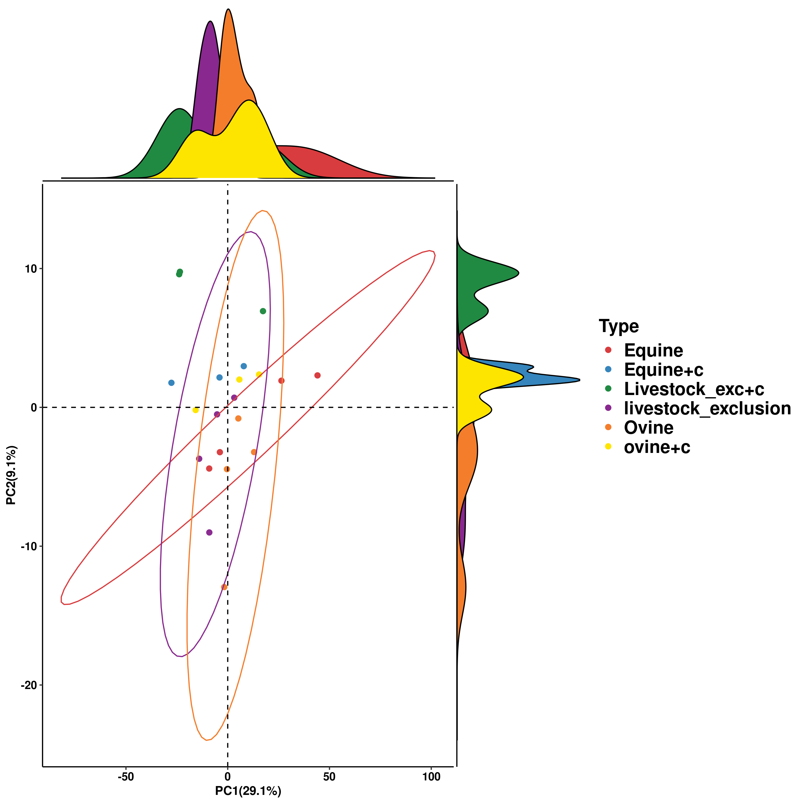
{kind=link}
Esta figura representa cada muestra como un punto dentro de un espacio bidimensional definido por las componentes principales PC1 (eje X) y PC2 (eje Y). Los puntos se colorean según el grupo experimental al que pertenece cada muestra, y se incluyen elipses de confianza que resumen la dispersión funcional dentro de cada grupo. Además, en los ejes se muestran distribuciones marginales de los puntos por grupo, lo que facilita observar cómo se distribuye la abundancia de pathways a lo largo de cada componente principal.
La interpretación de esta figura permite identificar patrones de agrupamiento funcional entre las muestras. Un agrupamiento compacto de muestras del mismo grupo indica que poseen perfiles funcionales similares, mientras que la separación clara entre grupos sugiere diferencias metabólicas significativas. Los solapamientos entre elipses pueden reflejar similitudes funcionales o redundancias entre grupos.
En resumen, el PCA global de pathways proporciona una visión inicial y completa de la estructura funcional de las comunidades microbianas del estudio. Esta visualización sirve como base antes de analizar comparaciones más específicas mediante métodos estadísticos. En el siguiente apartado se presentará el análisis diferencial global con ALDEx2, que permitirá identificar qué pathways muestran cambios significativos de abundancia entre los diferentes grupos experimentales.
7.2. Análisis diferencial global (ALDEx2)
En esta subsección se presentan los resultados del análisis diferencial global de pathways utilizando ALDEx2. ALDEx2 es un paquete estadístico diseñado para estudios de abundancia relativa de datos de secuenciación, que permite identificar features (en este caso, pathways) que difieren significativamente entre grupos experimentales, considerando la naturaleza composicional de los datos microbiológicos.
Mientras que el PCA global resume la variación funcional general, ALDEx2 permite evaluar de manera estadística qué pathways muestran diferencias significativas en abundancia relativa entre todos los grupos del estudio. Los resultados se presentan principalmente mediante mapas de calor y gráficos de p-values.
En esta sección se incluyen las siguientes figuras generadas previamente:
-
pathway_ALDEx2_Kruskal-Wallace_test_heatmap.png⇒ Mapa de calor basado en el test de Kruskal-Wallis para identificar pathways con diferencias globales. -
pathway_ALDEx2_glm_test_heatmap.png⇒ Mapa de calor basado en el modelo lineal generalizado (GLM), mostrando la abundancia relativa de pathways entre grupos. -
pathway_ALDEx2_glm_test_p_values.png⇒ Gráfico de p-values de GLM, destacando las rutas con diferencias estadísticamente significativas.
➤ Figura 1: pathway_ALDEx2_glm_test_heatmap.png
La siguiente figura corresponde al Mapa de calor basado en el modelo lineal generalizado (GLM) generado a partir del análisis funcional global. Este tipo de representación permite observar de manera visual y comparativa cómo varía la abundancia relativa de distintos pathways entre los grupos experimentales, facilitando la identificación de patrones y posibles diferencias funcionales relevantes.
A continuación, se indica la ubicación exacta en la que se encuentra almacenado este archivo de salida dentro del flujo de análisis:
/workspace/data/03-EXT-25-Metagenomic/Resultados/Def_16S/pathway_ALDEx2_glm_test_heatmap.png
Seguidamente se muestra la figura generada:
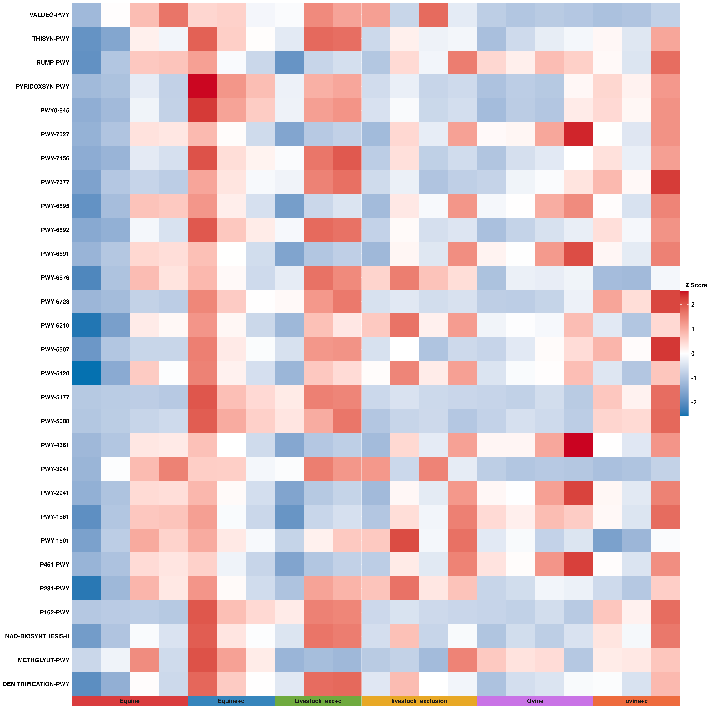
{kind=link}
➤ Figura 2: pathway_ALDEx2_glm_test_p_values.png
La siguiente figura corresponde al Gráfico de p-values asociados al test GLM generado a partir del análisis funcional global. Este tipo de representación permite observar de manera visual y comparativa cómo varía la abundancia relativa de distintos pathways entre los grupos experimentales, facilitando la identificación de patrones y posibles diferencias funcionales relevantes.
A continuación, se indica la ubicación exacta en la que se encuentra almacenado este archivo de salida dentro del flujo de análisis:
/workspace/data/03-EXT-25-Metagenomic/Resultados/Def_16S/pathway_ALDEx2_glm_test_p_values.png
Seguidamente se muestra la figura generada:
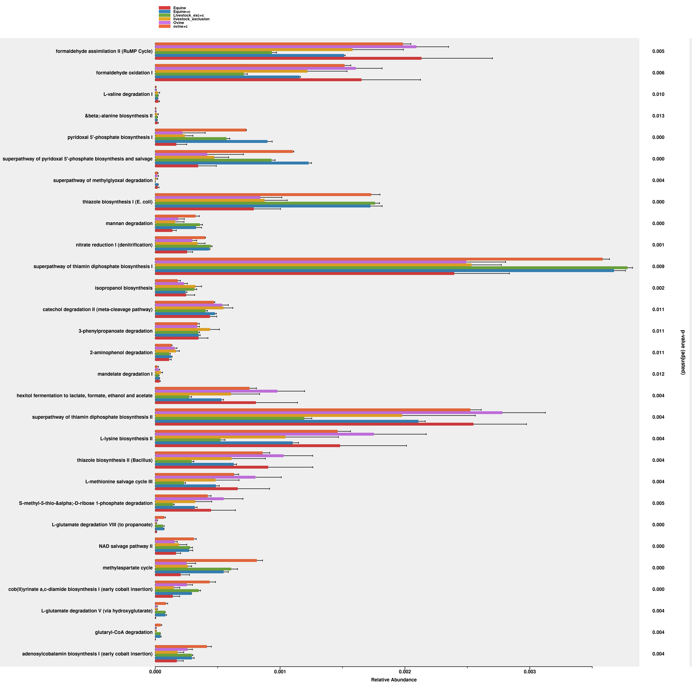
{kind=link}
➤ Figura 3: pathway_ALDEx2_Kruskal-Wallace_test_heatmap.png
La siguiente figura corresponde al Mapa de calor basado en el test de Kruskal–Wallis generado a partir del análisis funcional global. Este tipo de representación permite observar de manera visual y comparativa cómo varía la abundancia relativa de distintos pathways entre los grupos experimentales, facilitando la identificación de patrones y posibles diferencias funcionales relevantes.
A continuación, se indica la ubicación exacta en la que se encuentra almacenado este archivo de salida dentro del flujo de análisis:
/workspace/data/03-EXT-25-Metagenomic/Resultados/Def_16S/pathway_ALDEx2_Kruskal-Wallace_test_heatmap.png
Seguidamente se muestra la figura generada:
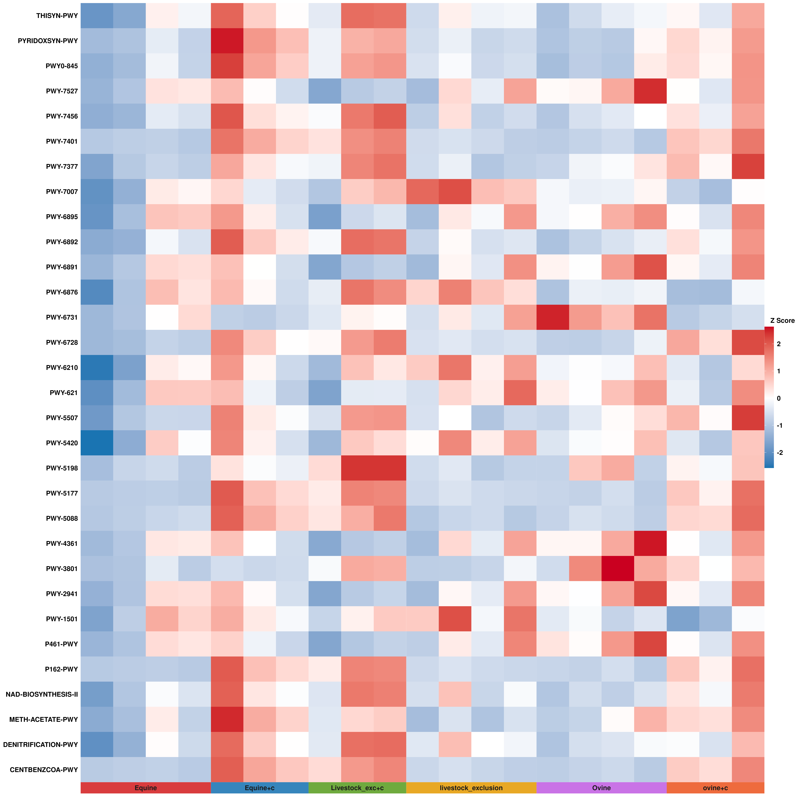
{kind=link}
Los mapas de calor permiten visualizar la abundancia relativa de pathways a lo largo de todos los grupos experimentales. Cada fila corresponde a un pathway y cada columna a un grupo o muestra, con colores que representan la magnitud relativa de abundancia. Esto facilita identificar patrones generales de expresión funcional y pathways que se comportan de manera similar entre distintos grupos.
El gráfico de p-values proporciona información complementaria, destacando las rutas metabólicas cuya abundancia relativa difiere de manera significativa según el modelo estadístico aplicado. Los pathways con p-values bajos son aquellos que muestran cambios más consistentes entre grupos y, por lo tanto, son de mayor interés para la interpretación biológica.
En conjunto, el análisis global con ALDEx2 permite identificar rutas metabólicas clave que diferencian las comunidades microbianas de los distintos grupos del estudio, sirviendo como base antes de explorar comparaciones más específicas entre pares de grupos, que se presentan en el siguiente apartado mediante MetagenomeSeq.
7.3. Comparaciones específicas por pares (MetagenomeSeq)
En esta subsección se presentan los resultados de las comparaciones funcionales específicas por pares de grupos obtenidos mediante MetagenomeSeq. Esta herramienta estadística está especialmente diseñada para analizar datos de abundancia relativa en estudios de metagenómica, teniendo en cuenta características propias de este tipo de datos, como su dispersión, su naturaleza censurada (por la gran cantidad de ceros) y la variabilidad entre muestras.
A diferencia del análisis global realizado con ALDEx2, que resume diferencias considerando todos los grupos simultáneamente, MetagenomeSeq permite realizar comparaciones dirigidas entre pares de grupos específicos. Esto hace posible detectar rutas metabólicas (pathways) cuya abundancia relativa difiere significativamente únicamente en esa comparación concreta, proporcionando una visión más focalizada de los cambios funcionales asociados a cada condición experimental.
Cada figura mostrada a continuación representa el resultado de una de estas comparaciones. En ellas se visualizan los pathways que superan los umbrales definidos de significancia estadística y abundancia relativa, lo que facilita identificar funciones biológicas potencialmente relevantes que diferencian a un grupo del otro.
Las imágenes incluidas en esta sección provienen de los archivos generados previamente y nombrados con el prefijo pathway_MetagenomeSeq_, cada uno correspondiente a una comparación específica entre dos grupos experimentales.
Es importante señalar que, en algunos casos, una figura puede aparecer vacía o sin contenido visible. Esto suele deberse a que no se han detectado pathways diferencialmente abundantes para esa comparación bajo los criterios estadísticos establecidos (por ejemplo, valores de p ajustados por debajo del umbral definido). También puede ocurrir cuando las diferencias entre los grupos son muy pequeñas o no se dispone de un número suficiente de muestras para alcanzar significancia estadística.
➤ Figura 1: pathway_MetagenomeSeq_Equine_vs_Equineplusc.png
La siguiente figura muestra los resultados del análisis diferencial de pathways realizado con MetagenomeSeq para la comparación específica entre los grupos Equine y Equineplusc. Este tipo de análisis permite identificar rutas metabólicas cuya abundancia relativa difiere significativamente entre ambos grupos, revelando posibles funciones biológicas que caracterizan a cada uno.
A continuación, se muestra la ruta en la que se encuentra almacenado el archivo generado durante el flujo de análisis:
/workspace/data/03-EXT-25-Metagenomic/Resultados/Def_16S/pathway_MetagenomeSeq_Equine_vs_Equineplusc.png
Seguidamente se presenta la figura correspondiente a esta comparación:
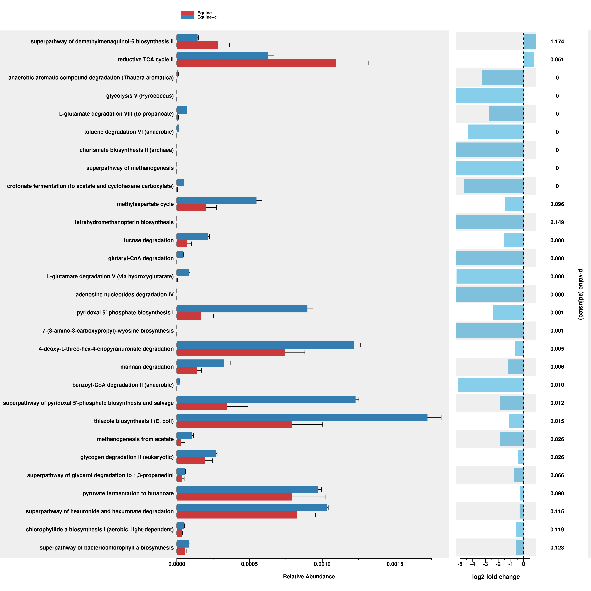
{kind=link}
➤ Figura 2: pathway_MetagenomeSeq_Equine_vs_livestock_exclusion.png
La siguiente figura muestra los resultados del análisis diferencial de pathways realizado con MetagenomeSeq para la comparación específica entre los grupos Equine y Livestock exclusion. Este tipo de análisis permite identificar rutas metabólicas cuya abundancia relativa difiere significativamente entre ambos grupos, revelando posibles funciones biológicas que caracterizan a cada uno.
A continuación, se muestra la ruta en la que se encuentra almacenado el archivo generado durante el flujo de análisis:
/workspace/data/03-EXT-25-Metagenomic/Resultados/Def_16S/pathway_MetagenomeSeq_Equine_vs_livestock_exclusion.png
Seguidamente se presenta la figura correspondiente a esta comparación:
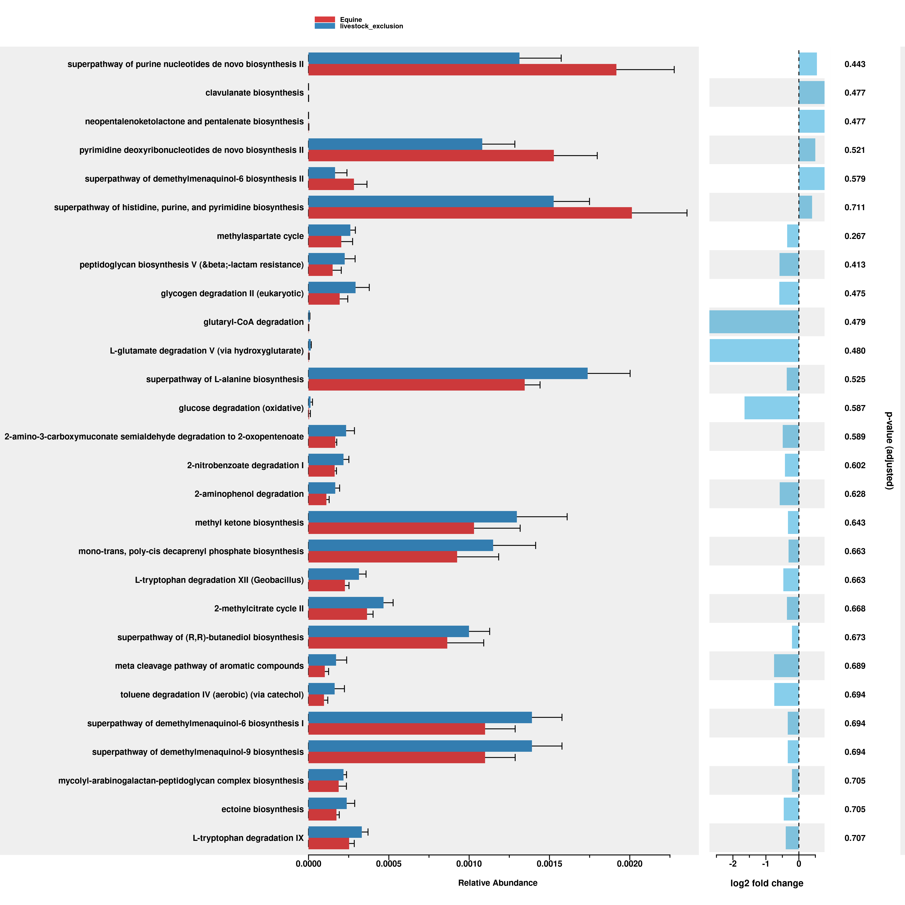
{kind=link}
➤ Figura 3: pathway_MetagenomeSeq_Equine_vs_Livestock_excplusc.png
La siguiente figura muestra los resultados del análisis diferencial de pathways realizado con MetagenomeSeq para la comparación específica entre los grupos Equine y Livestock excplusc. Este tipo de análisis permite identificar rutas metabólicas cuya abundancia relativa difiere significativamente entre ambos grupos, revelando posibles funciones biológicas que caracterizan a cada uno.
A continuación, se muestra la ruta en la que se encuentra almacenado el archivo generado durante el flujo de análisis:
/workspace/data/03-EXT-25-Metagenomic/Resultados/Def_16S/pathway_MetagenomeSeq_Equine_vs_Livestock_excplusc.png
Seguidamente se presenta la figura correspondiente a esta comparación:
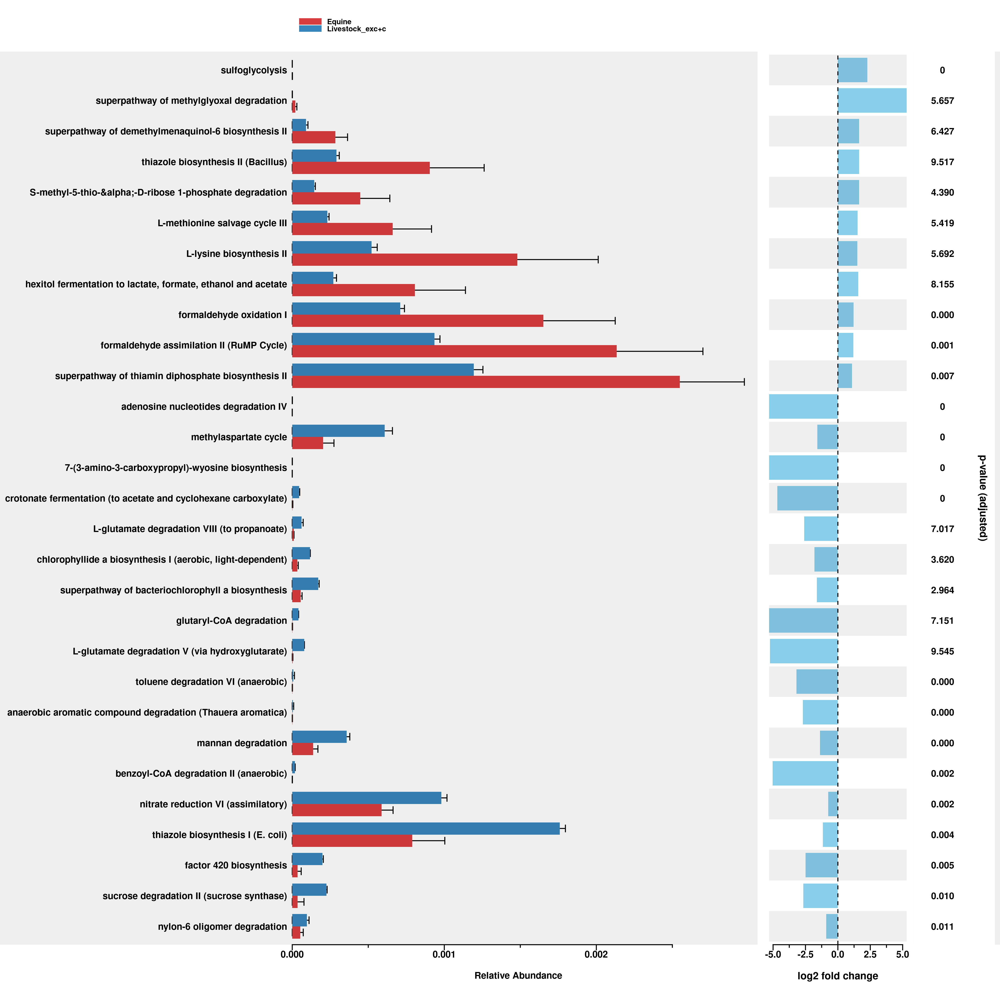
{kind=link}
➤ Figura 4: pathway_MetagenomeSeq_Equine_vs_Ovine.png
La siguiente figura muestra los resultados del análisis diferencial de pathways realizado con MetagenomeSeq para la comparación específica entre los grupos Equine y Ovine. Este tipo de análisis permite identificar rutas metabólicas cuya abundancia relativa difiere significativamente entre ambos grupos, revelando posibles funciones biológicas que caracterizan a cada uno.
A continuación, se muestra la ruta en la que se encuentra almacenado el archivo generado durante el flujo de análisis:
/workspace/data/03-EXT-25-Metagenomic/Resultados/Def_16S/pathway_MetagenomeSeq_Equine_vs_Ovine.png
Seguidamente se presenta la figura correspondiente a esta comparación:
{kind=link}
➤ Figura 5: pathway_MetagenomeSeq_Equine_vs_ovineplusc.png
La siguiente figura muestra los resultados del análisis diferencial de pathways realizado con MetagenomeSeq para la comparación específica entre los grupos Equine y Ovineplusc. Este tipo de análisis permite identificar rutas metabólicas cuya abundancia relativa difiere significativamente entre ambos grupos, revelando posibles funciones biológicas que caracterizan a cada uno.
A continuación, se muestra la ruta en la que se encuentra almacenado el archivo generado durante el flujo de análisis:
/workspace/data/03-EXT-25-Metagenomic/Resultados/Def_16S/pathway_MetagenomeSeq_Equine_vs_ovineplusc.png
Seguidamente se presenta la figura correspondiente a esta comparación:
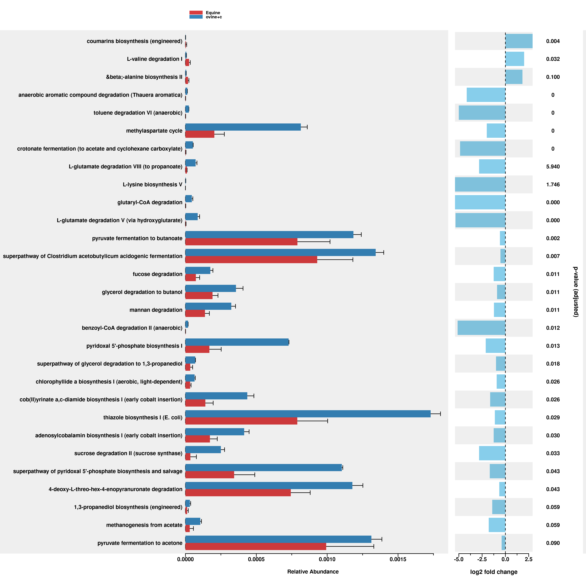
{kind=link}
➤ Figura 6: pathway_MetagenomeSeq_Equineplusc_vs_Livestock_excplusc.png
La siguiente figura muestra los resultados del análisis diferencial de pathways realizado con MetagenomeSeq para la comparación específica entre los grupos Equineplusc y Livestock excplusc. Este tipo de análisis permite identificar rutas metabólicas cuya abundancia relativa difiere significativamente entre ambos grupos, revelando posibles funciones biológicas que caracterizan a cada uno.
A continuación, se muestra la ruta en la que se encuentra almacenado el archivo generado durante el flujo de análisis:
/workspace/data/03-EXT-25-Metagenomic/Resultados/Def_16S/pathway_MetagenomeSeq_Equineplusc_vs_Livestock_excplusc.png
Seguidamente se presenta la figura correspondiente a esta comparación:
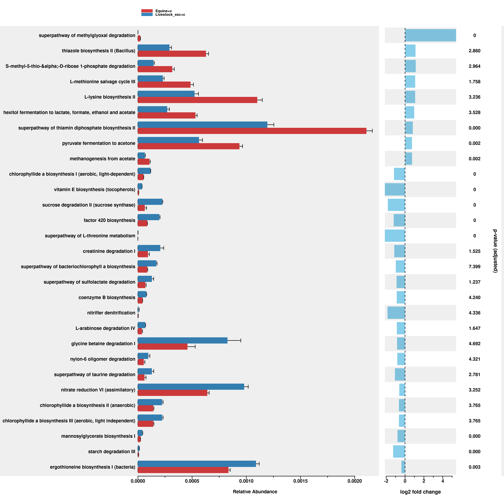
{kind=link}
➤ Figura 7: pathway_MetagenomeSeq_Equineplusc_vs_ovineplusc.png
La siguiente figura muestra los resultados del análisis diferencial de pathways realizado con MetagenomeSeq para la comparación específica entre los grupos Equineplusc y Ovineplusc. Este tipo de análisis permite identificar rutas metabólicas cuya abundancia relativa difiere significativamente entre ambos grupos, revelando posibles funciones biológicas que caracterizan a cada uno.
A continuación, se muestra la ruta en la que se encuentra almacenado el archivo generado durante el flujo de análisis:
/workspace/data/03-EXT-25-Metagenomic/Resultados/Def_16S/pathway_MetagenomeSeq_Equineplusc_vs_ovineplusc.png
Seguidamente se presenta la figura correspondiente a esta comparación:

➤ Figura 8: pathway_MetagenomeSeq_livestock_exclusion_vs_Equineplusc.png
La siguiente figura muestra los resultados del análisis diferencial de pathways realizado con MetagenomeSeq para la comparación específica entre los grupos Livestock exclusion y Equineplusc. Este tipo de análisis permite identificar rutas metabólicas cuya abundancia relativa difiere significativamente entre ambos grupos, revelando posibles funciones biológicas que caracterizan a cada uno.
A continuación, se muestra la ruta en la que se encuentra almacenado el archivo generado durante el flujo de análisis:
/workspace/data/03-EXT-25-Metagenomic/Resultados/Def_16S/pathway_MetagenomeSeq_livestock_exclusion_vs_Equineplusc.png
Seguidamente se presenta la figura correspondiente a esta comparación:
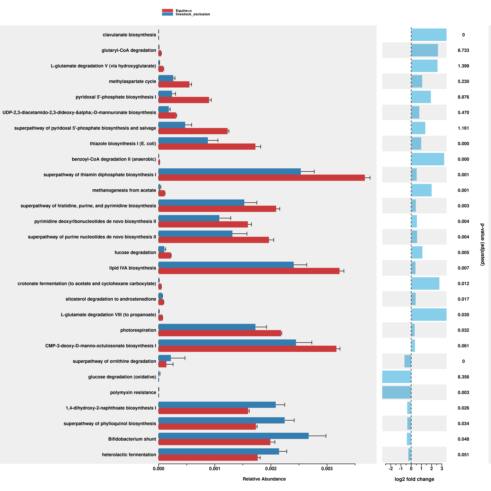
{kind=link}
➤ Figura 9: pathway_MetagenomeSeq_livestock_exclusion_vs_Livestock_excplusc.png
La siguiente figura muestra los resultados del análisis diferencial de pathways realizado con MetagenomeSeq para la comparación específica entre los grupos Livestock exclusion y Livestock excplusc. Este tipo de análisis permite identificar rutas metabólicas cuya abundancia relativa difiere significativamente entre ambos grupos, revelando posibles funciones biológicas que caracterizan a cada uno.
A continuación, se muestra la ruta en la que se encuentra almacenado el archivo generado durante el flujo de análisis:
/workspace/data/03-EXT-25-Metagenomic/Resultados/Def_16S/pathway_MetagenomeSeq_livestock_exclusion_vs_Livestock_excplusc.png
Seguidamente se presenta la figura correspondiente a esta comparación:
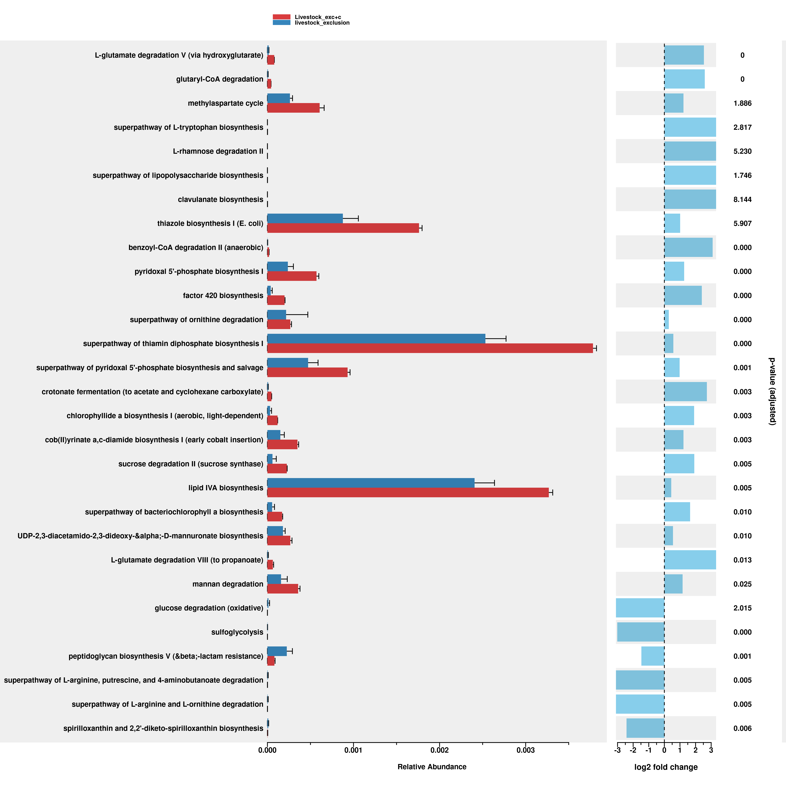
{kind=link}
➤ Figura 10: pathway_MetagenomeSeq_livestock_exclusion_vs_ovineplusc.png
La siguiente figura muestra los resultados del análisis diferencial de pathways realizado con MetagenomeSeq para la comparación específica entre los grupos Livestock exclusion y Ovineplusc. Este tipo de análisis permite identificar rutas metabólicas cuya abundancia relativa difiere significativamente entre ambos grupos, revelando posibles funciones biológicas que caracterizan a cada uno.
A continuación, se muestra la ruta en la que se encuentra almacenado el archivo generado durante el flujo de análisis:
/workspace/data/03-EXT-25-Metagenomic/Resultados/Def_16S/pathway_MetagenomeSeq_livestock_exclusion_vs_ovineplusc.png
Seguidamente se presenta la figura correspondiente a esta comparación:
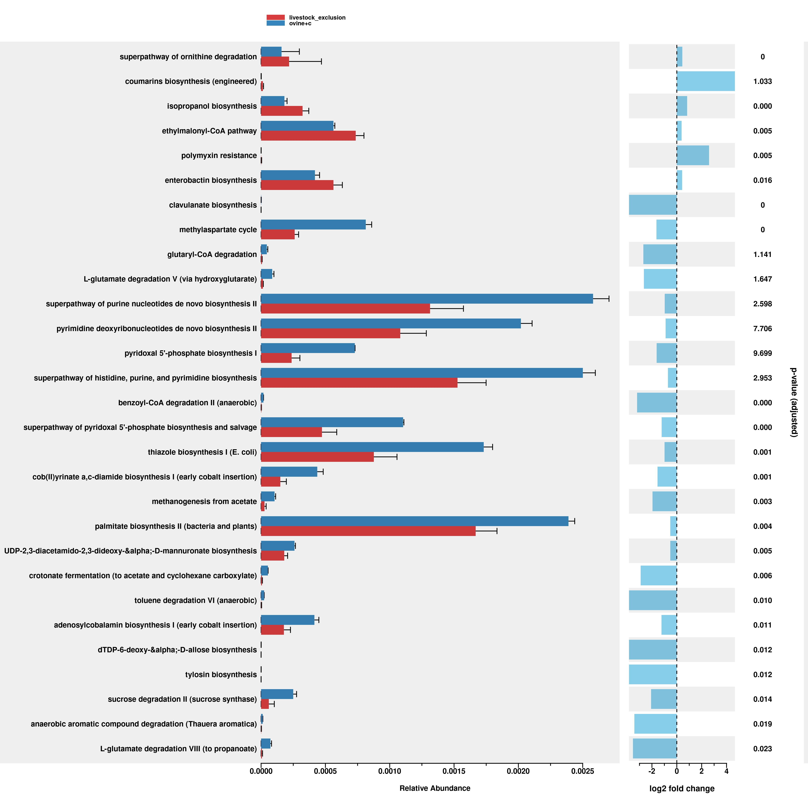
{kind=link}
➤ Figura 11: pathway_MetagenomeSeq_Ovine_vs_Equineplusc.png
La siguiente figura muestra los resultados del análisis diferencial de pathways realizado con MetagenomeSeq para la comparación específica entre los grupos Ovine y Equineplusc. Este tipo de análisis permite identificar rutas metabólicas cuya abundancia relativa difiere significativamente entre ambos grupos, revelando posibles funciones biológicas que caracterizan a cada uno.
A continuación, se muestra la ruta en la que se encuentra almacenado el archivo generado durante el flujo de análisis:
/workspace/data/03-EXT-25-Metagenomic/Resultados/Def_16S/pathway_MetagenomeSeq_Ovine_vs_Equineplusc.png
Seguidamente se presenta la figura correspondiente a esta comparación:
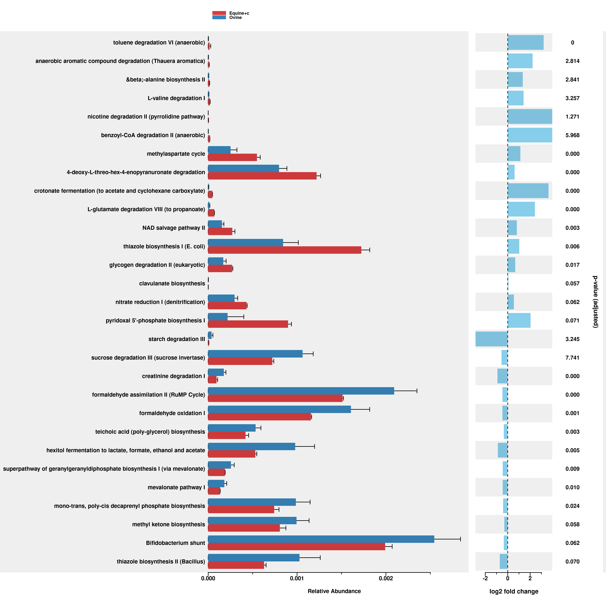
{kind=link}
➤ Figura 12: pathway_MetagenomeSeq_Ovine_vs_livestock_exclusion.png
La siguiente figura muestra los resultados del análisis diferencial de pathways realizado con MetagenomeSeq para la comparación específica entre los grupos Ovine y Livestock exclusion. Este tipo de análisis permite identificar rutas metabólicas cuya abundancia relativa difiere significativamente entre ambos grupos, revelando posibles funciones biológicas que caracterizan a cada uno.
A continuación, se muestra la ruta en la que se encuentra almacenado el archivo generado durante el flujo de análisis:
/workspace/data/03-EXT-25-Metagenomic/Resultados/Def_16S/pathway_MetagenomeSeq_Ovine_vs_livestock_exclusion.png
Seguidamente se presenta la figura correspondiente a esta comparación:
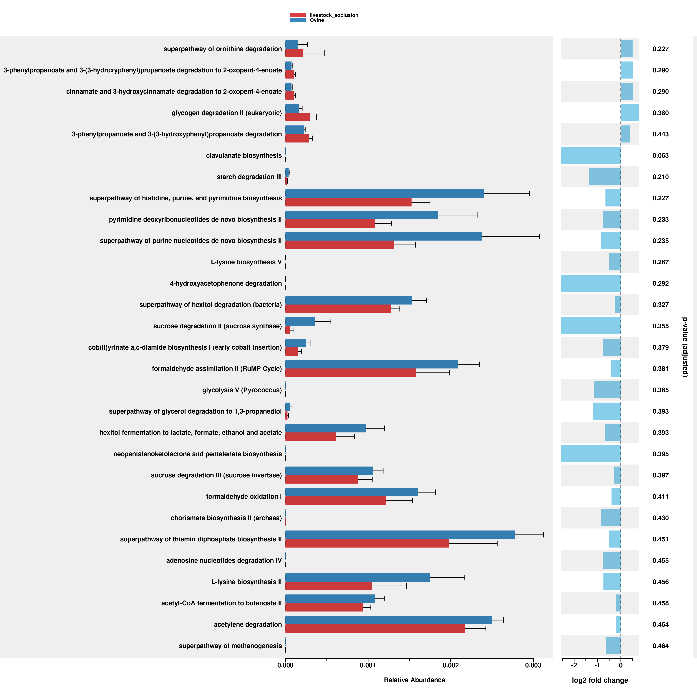
{kind=link}
➤ Figura 13: pathway_MetagenomeSeq_Ovine_vs_Livestock_excplusc.png
La siguiente figura muestra los resultados del análisis diferencial de pathways realizado con MetagenomeSeq para la comparación específica entre los grupos Ovine y Livestock excplusc. Este tipo de análisis permite identificar rutas metabólicas cuya abundancia relativa difiere significativamente entre ambos grupos, revelando posibles funciones biológicas que caracterizan a cada uno.
A continuación, se muestra la ruta en la que se encuentra almacenado el archivo generado durante el flujo de análisis:
/workspace/data/03-EXT-25-Metagenomic/Resultados/Def_16S/pathway_MetagenomeSeq_Ovine_vs_Livestock_excplusc.png
Seguidamente se presenta la figura correspondiente a esta comparación:
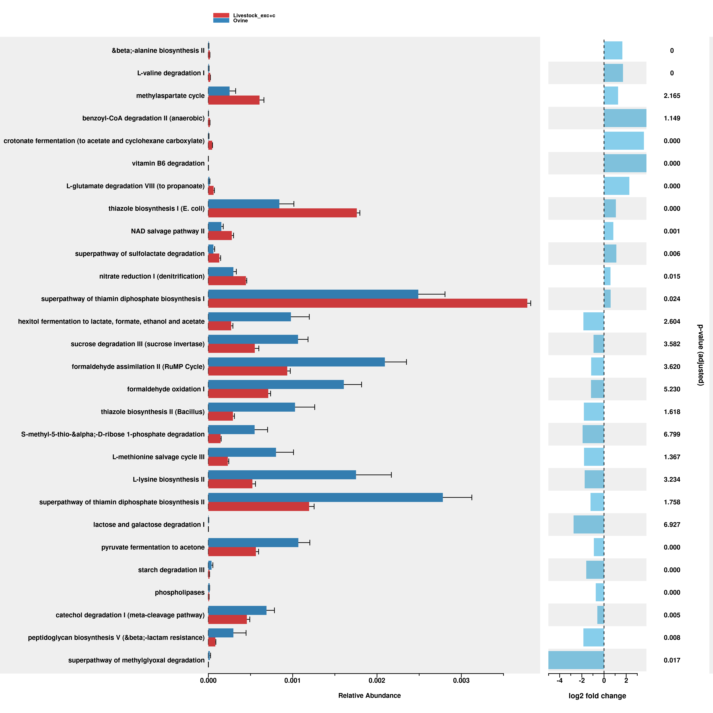
{kind=link}
➤ Figura 14: pathway_MetagenomeSeq_Ovine_vs_ovineplusc.png
La siguiente figura muestra los resultados del análisis diferencial de pathways realizado con MetagenomeSeq para la comparación específica entre los grupos Ovine y Ovineplusc. Este tipo de análisis permite identificar rutas metabólicas cuya abundancia relativa difiere significativamente entre ambos grupos, revelando posibles funciones biológicas que caracterizan a cada uno.
A continuación, se muestra la ruta en la que se encuentra almacenado el archivo generado durante el flujo de análisis:
/workspace/data/03-EXT-25-Metagenomic/Resultados/Def_16S/pathway_MetagenomeSeq_Ovine_vs_ovineplusc.png
Seguidamente se presenta la figura correspondiente a esta comparación:
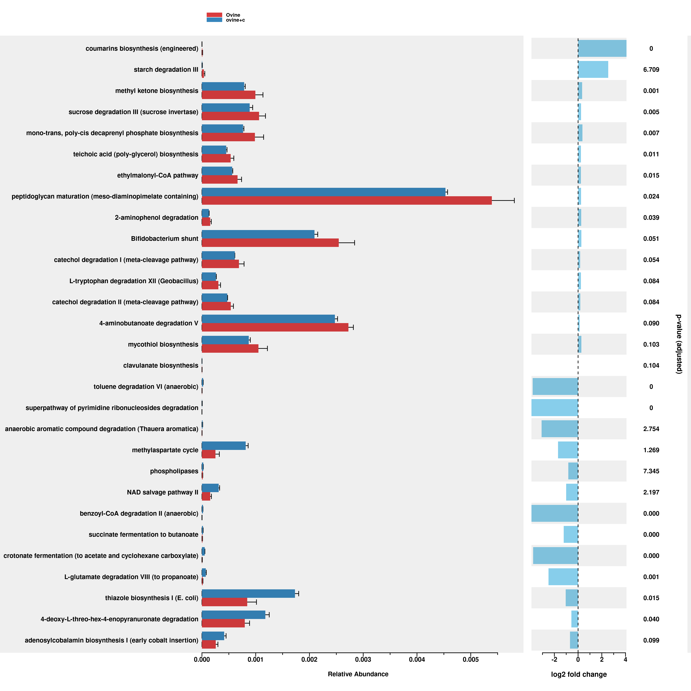
{kind=link}
➤ Figura 15: pathway_MetagenomeSeq_ovineplusc_vs_Livestock_excplusc.png
La siguiente figura muestra los resultados del análisis diferencial de pathways realizado con MetagenomeSeq para la comparación específica entre los grupos Ovineplusc y Livestock excplusc. Este tipo de análisis permite identificar rutas metabólicas cuya abundancia relativa difiere significativamente entre ambos grupos, revelando posibles funciones biológicas que caracterizan a cada uno.
A continuación, se muestra la ruta en la que se encuentra almacenado el archivo generado durante el flujo de análisis:
/workspace/data/03-EXT-25-Metagenomic/Resultados/Def_16S/pathway_MetagenomeSeq_ovineplusc_vs_Livestock_excplusc.png
Seguidamente se presenta la figura correspondiente a esta comparación:
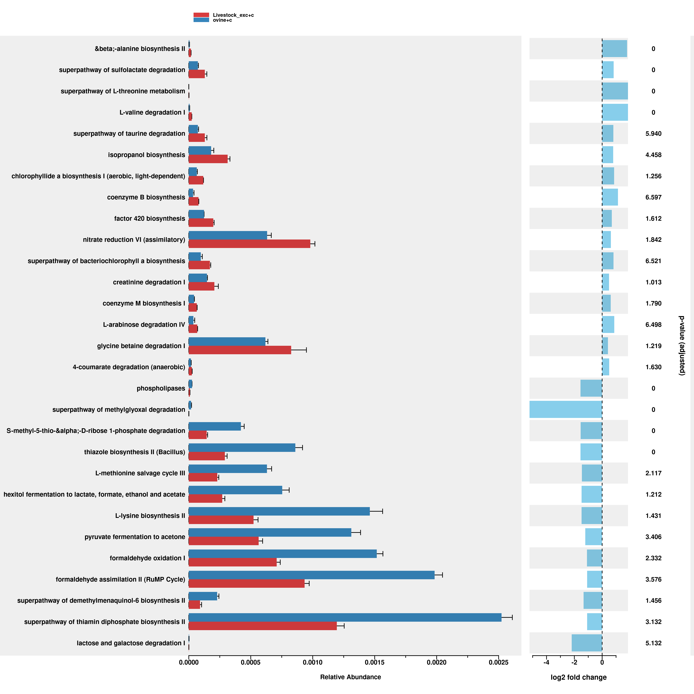
{kind=link}
Cada gráfico de MetagenomeSeq muestra la abundancia relativa de pathways para la comparación específica entre dos grupos. En los gráficos de barras, cada barra representa un pathway, con su altura indicando la abundancia relativa y el color o marcador señalando la significancia estadística. Esto permite identificar pathways que están sobre- o subrepresentados en un grupo en comparación con otro.
La interpretación de estas figuras permite detectar rutas metabólicas clave asociadas a diferencias entre grupos específicos. Al analizar estas comparaciones por pares, se puede identificar funcionalidad metabólica particular de ciertos grupos experimentales y posibles rutas responsables de diferencias fenotípicas o de la respuesta a tratamientos.
En conjunto, las comparaciones por pares de MetagenomeSeq complementan los análisis globales de ALDEx2, proporcionando un detalle más fino sobre las diferencias funcionales. A continuación, en la subsección 7.4, se mostrarán los PCA funcionales por pares, que permiten visualizar patrones de agrupamiento de pathways en cada comparación individual.
7.4. PCA funcional por pares (pathway_pca_MetagenomeSeq_*)
En esta subsección se presentan los resultados del Análisis de Componentes Principales (PCA) funcional realizado de forma específica para cada par de grupos experimentales. A diferencia del PCA global mostrado en la sección 7.1, aquí se analiza únicamente la variación funcional entre dos grupos concretos, utilizando los perfiles de pathways obtenidos tras el análisis con MetagenomeSeq.
Cada figura de PCA por pares permite evaluar visualmente cómo se agrupan las muestras de los dos grupos comparados en función de su perfil funcional. Los puntos representan muestras individuales, coloreadas según el grupo, mientras que las elipses muestran la dispersión y el patrón central de cada grupo. Los ejes PC1 y PC2 reflejan las dos componentes principales que capturan la mayor parte de la variabilidad funcional entre las muestras de cada comparación.
Los archivos mostrados en esta sección tienen nombres que comienzan con pathway_pca_MetagenomeSeq_, cada uno correspondiente a una comparación específica entre dos grupos experimentales. Estas representaciones gráficas permiten identificar de manera visual separaciones o solapamientos funcionales entre los grupos, evaluando la consistencia de los patrones observados en los análisis de MetagenomeSeq.
Es importante mencionar que algunas figuras pueden aparecer vacías o sin contenido visible. Esto ocurre cuando no se detecta suficiente variabilidad funcional entre los grupos para generar un PCA informativo, o cuando la generación de la imagen se omitió en el flujo de análisis de R. La ausencia de señal gráfica no implica un error, sino que refleja la falta de patrones estadísticamente relevantes en esa comparación específica.
➤ Figura 1: pathway_pca_MetagenomeSeq_Equine_vs_Equineplusc.png
La siguiente figura muestra el PCA funcional por pares correspondiente a la comparación entre los grupos Equine y Equineplusc. Este tipo de análisis permite visualizar cómo se agrupan las muestras según su perfil funcional y evaluar la separación o solapamiento entre ambos grupos.
A continuación, se indica la ruta en la que se encuentra almacenado el archivo generado durante el flujo de análisis:
/workspace/data/03-EXT-25-Metagenomic/Resultados/Def_16S/pathway_pca_MetagenomeSeq_Equine_vs_Equineplusc.png
Seguidamente se presenta la figura correspondiente a esta comparación:

➤ Figura 2: pathway_pca_MetagenomeSeq_Equine_vs_livestock_exclusion.png
La siguiente figura muestra el PCA funcional por pares correspondiente a la comparación entre los grupos Equine y Livestock exclusion. Este tipo de análisis permite visualizar cómo se agrupan las muestras según su perfil funcional y evaluar la separación o solapamiento entre ambos grupos.
A continuación, se indica la ruta en la que se encuentra almacenado el archivo generado durante el flujo de análisis:
/workspace/data/03-EXT-25-Metagenomic/Resultados/Def_16S/pathway_pca_MetagenomeSeq_Equine_vs_livestock_exclusion.png
Seguidamente se presenta la figura correspondiente a esta comparación:

➤ Figura 3: pathway_pca_MetagenomeSeq_Equine_vs_Livestock_excplusc.png
La siguiente figura muestra el PCA funcional por pares correspondiente a la comparación entre los grupos Equine y Livestock excplusc. Este tipo de análisis permite visualizar cómo se agrupan las muestras según su perfil funcional y evaluar la separación o solapamiento entre ambos grupos.
A continuación, se indica la ruta en la que se encuentra almacenado el archivo generado durante el flujo de análisis:
/workspace/data/03-EXT-25-Metagenomic/Resultados/Def_16S/pathway_pca_MetagenomeSeq_Equine_vs_Livestock_excplusc.png
Seguidamente se presenta la figura correspondiente a esta comparación:

➤ Figura 4: pathway_pca_MetagenomeSeq_Equine_vs_Ovine.png
La siguiente figura muestra el PCA funcional por pares correspondiente a la comparación entre los grupos Equine y Ovine. Este tipo de análisis permite visualizar cómo se agrupan las muestras según su perfil funcional y evaluar la separación o solapamiento entre ambos grupos.
A continuación, se indica la ruta en la que se encuentra almacenado el archivo generado durante el flujo de análisis:
/workspace/data/03-EXT-25-Metagenomic/Resultados/Def_16S/pathway_pca_MetagenomeSeq_Equine_vs_Ovine.png
Seguidamente se presenta la figura correspondiente a esta comparación:

➤ Figura 5: pathway_pca_MetagenomeSeq_Equine_vs_ovineplusc.png
La siguiente figura muestra el PCA funcional por pares correspondiente a la comparación entre los grupos Equine y Ovineplusc. Este tipo de análisis permite visualizar cómo se agrupan las muestras según su perfil funcional y evaluar la separación o solapamiento entre ambos grupos.
A continuación, se indica la ruta en la que se encuentra almacenado el archivo generado durante el flujo de análisis:
/workspace/data/03-EXT-25-Metagenomic/Resultados/Def_16S/pathway_pca_MetagenomeSeq_Equine_vs_ovineplusc.png
Seguidamente se presenta la figura correspondiente a esta comparación:

➤ Figura 6: pathway_pca_MetagenomeSeq_Equineplusc_vs_livestock_exclusion.png
La siguiente figura muestra el PCA funcional por pares correspondiente a la comparación entre los grupos Equineplusc y Livestock exclusion. Este tipo de análisis permite visualizar cómo se agrupan las muestras según su perfil funcional y evaluar la separación o solapamiento entre ambos grupos.
A continuación, se indica la ruta en la que se encuentra almacenado el archivo generado durante el flujo de análisis:
/workspace/data/03-EXT-25-Metagenomic/Resultados/Def_16S/pathway_pca_MetagenomeSeq_Equineplusc_vs_livestock_exclusion.png
Seguidamente se presenta la figura correspondiente a esta comparación:

➤ Figura 7: pathway_pca_MetagenomeSeq_Equineplusc_vs_Livestock_excplusc.png
La siguiente figura muestra el PCA funcional por pares correspondiente a la comparación entre los grupos Equineplusc y Livestock excplusc. Este tipo de análisis permite visualizar cómo se agrupan las muestras según su perfil funcional y evaluar la separación o solapamiento entre ambos grupos.
A continuación, se indica la ruta en la que se encuentra almacenado el archivo generado durante el flujo de análisis:
/workspace/data/03-EXT-25-Metagenomic/Resultados/Def_16S/pathway_pca_MetagenomeSeq_Equineplusc_vs_Livestock_excplusc.png
Seguidamente se presenta la figura correspondiente a esta comparación:

➤ Figura 8: pathway_pca_MetagenomeSeq_Equineplusc_vs_Ovine.png
La siguiente figura muestra el PCA funcional por pares correspondiente a la comparación entre los grupos Equineplusc y Ovine. Este tipo de análisis permite visualizar cómo se agrupan las muestras según su perfil funcional y evaluar la separación o solapamiento entre ambos grupos.
A continuación, se indica la ruta en la que se encuentra almacenado el archivo generado durante el flujo de análisis:
/workspace/data/03-EXT-25-Metagenomic/Resultados/Def_16S/pathway_pca_MetagenomeSeq_Equineplusc_vs_Ovine.png
Seguidamente se presenta la figura correspondiente a esta comparación:

➤ Figura 9: pathway_pca_MetagenomeSeq_Equineplusc_vs_ovineplusc.png
La siguiente figura muestra el PCA funcional por pares correspondiente a la comparación entre los grupos Equineplusc y Ovineplusc. Este tipo de análisis permite visualizar cómo se agrupan las muestras según su perfil funcional y evaluar la separación o solapamiento entre ambos grupos.
A continuación, se indica la ruta en la que se encuentra almacenado el archivo generado durante el flujo de análisis:
/workspace/data/03-EXT-25-Metagenomic/Resultados/Def_16S/pathway_pca_MetagenomeSeq_Equineplusc_vs_ovineplusc.png
Seguidamente se presenta la figura correspondiente a esta comparación:

➤ Figura 10: pathway_pca_MetagenomeSeq_livestock_exclusion_vs_Equineplusc.png
La siguiente figura muestra el PCA funcional por pares correspondiente a la comparación entre los grupos Livestock exclusion y Equineplusc. Este tipo de análisis permite visualizar cómo se agrupan las muestras según su perfil funcional y evaluar la separación o solapamiento entre ambos grupos.
A continuación, se indica la ruta en la que se encuentra almacenado el archivo generado durante el flujo de análisis:
/workspace/data/03-EXT-25-Metagenomic/Resultados/Def_16S/pathway_pca_MetagenomeSeq_livestock_exclusion_vs_Equineplusc.png
Seguidamente se presenta la figura correspondiente a esta comparación:

➤ Figura 11: pathway_pca_MetagenomeSeq_livestock_exclusion_vs_Livestock_excplusc.png
La siguiente figura muestra el PCA funcional por pares correspondiente a la comparación entre los grupos Livestock exclusion y Livestock excplusc. Este tipo de análisis permite visualizar cómo se agrupan las muestras según su perfil funcional y evaluar la separación o solapamiento entre ambos grupos.
A continuación, se indica la ruta en la que se encuentra almacenado el archivo generado durante el flujo de análisis:
/workspace/data/03-EXT-25-Metagenomic/Resultados/Def_16S/pathway_pca_MetagenomeSeq_livestock_exclusion_vs_Livestock_excplusc.png
Seguidamente se presenta la figura correspondiente a esta comparación:

➤ Figura 12: pathway_pca_MetagenomeSeq_livestock_exclusion_vs_Ovine.png
La siguiente figura muestra el PCA funcional por pares correspondiente a la comparación entre los grupos Livestock exclusion y Ovine. Este tipo de análisis permite visualizar cómo se agrupan las muestras según su perfil funcional y evaluar la separación o solapamiento entre ambos grupos.
A continuación, se indica la ruta en la que se encuentra almacenado el archivo generado durante el flujo de análisis:
/workspace/data/03-EXT-25-Metagenomic/Resultados/Def_16S/pathway_pca_MetagenomeSeq_livestock_exclusion_vs_Ovine.png
Seguidamente se presenta la figura correspondiente a esta comparación:

➤ Figura 13: pathway_pca_MetagenomeSeq_livestock_exclusion_vs_ovineplusc.png
La siguiente figura muestra el PCA funcional por pares correspondiente a la comparación entre los grupos Livestock exclusion y Ovineplusc. Este tipo de análisis permite visualizar cómo se agrupan las muestras según su perfil funcional y evaluar la separación o solapamiento entre ambos grupos.
A continuación, se indica la ruta en la que se encuentra almacenado el archivo generado durante el flujo de análisis:
/workspace/data/03-EXT-25-Metagenomic/Resultados/Def_16S/pathway_pca_MetagenomeSeq_livestock_exclusion_vs_ovineplusc.png
Seguidamente se presenta la figura correspondiente a esta comparación:

➤ Figura 14: pathway_pca_MetagenomeSeq_Livestock_excplusc_vs_livestock_exclusion.png
La siguiente figura muestra el PCA funcional por pares correspondiente a la comparación entre los grupos Livestock excplusc y Livestock exclusion. Este tipo de análisis permite visualizar cómo se agrupan las muestras según su perfil funcional y evaluar la separación o solapamiento entre ambos grupos.
A continuación, se indica la ruta en la que se encuentra almacenado el archivo generado durante el flujo de análisis:
/workspace/data/03-EXT-25-Metagenomic/Resultados/Def_16S/pathway_pca_MetagenomeSeq_Livestock_excplusc_vs_livestock_exclusion.png
Seguidamente se presenta la figura correspondiente a esta comparación:

➤ Figura 15: pathway_pca_MetagenomeSeq_Livestock_excplusc_vs_Ovine.png
La siguiente figura muestra el PCA funcional por pares correspondiente a la comparación entre los grupos Livestock excplusc y Ovine. Este tipo de análisis permite visualizar cómo se agrupan las muestras según su perfil funcional y evaluar la separación o solapamiento entre ambos grupos.
A continuación, se indica la ruta en la que se encuentra almacenado el archivo generado durante el flujo de análisis:
/workspace/data/03-EXT-25-Metagenomic/Resultados/Def_16S/pathway_pca_MetagenomeSeq_Livestock_excplusc_vs_Ovine.png
Seguidamente se presenta la figura correspondiente a esta comparación:

➤ Figura 16: pathway_pca_MetagenomeSeq_Livestock_excplusc_vs_ovineplusc.png
La siguiente figura muestra el PCA funcional por pares correspondiente a la comparación entre los grupos Livestock excplusc y Ovineplusc. Este tipo de análisis permite visualizar cómo se agrupan las muestras según su perfil funcional y evaluar la separación o solapamiento entre ambos grupos.
A continuación, se indica la ruta en la que se encuentra almacenado el archivo generado durante el flujo de análisis:
/workspace/data/03-EXT-25-Metagenomic/Resultados/Def_16S/pathway_pca_MetagenomeSeq_Livestock_excplusc_vs_ovineplusc.png
Seguidamente se presenta la figura correspondiente a esta comparación:

➤ Figura 17: pathway_pca_MetagenomeSeq_Ovine_vs_Equineplusc.png
La siguiente figura muestra el PCA funcional por pares correspondiente a la comparación entre los grupos Ovine y Equineplusc. Este tipo de análisis permite visualizar cómo se agrupan las muestras según su perfil funcional y evaluar la separación o solapamiento entre ambos grupos.
A continuación, se indica la ruta en la que se encuentra almacenado el archivo generado durante el flujo de análisis:
/workspace/data/03-EXT-25-Metagenomic/Resultados/Def_16S/pathway_pca_MetagenomeSeq_Ovine_vs_Equineplusc.png
Seguidamente se presenta la figura correspondiente a esta comparación:

➤ Figura 18: pathway_pca_MetagenomeSeq_Ovine_vs_livestock_exclusion.png
La siguiente figura muestra el PCA funcional por pares correspondiente a la comparación entre los grupos Ovine y Livestock exclusion. Este tipo de análisis permite visualizar cómo se agrupan las muestras según su perfil funcional y evaluar la separación o solapamiento entre ambos grupos.
A continuación, se indica la ruta en la que se encuentra almacenado el archivo generado durante el flujo de análisis:
/workspace/data/03-EXT-25-Metagenomic/Resultados/Def_16S/pathway_pca_MetagenomeSeq_Ovine_vs_livestock_exclusion.png
Seguidamente se presenta la figura correspondiente a esta comparación:

➤ Figura 19: pathway_pca_MetagenomeSeq_Ovine_vs_Livestock_excplusc.png
La siguiente figura muestra el PCA funcional por pares correspondiente a la comparación entre los grupos Ovine y Livestock excplusc. Este tipo de análisis permite visualizar cómo se agrupan las muestras según su perfil funcional y evaluar la separación o solapamiento entre ambos grupos.
A continuación, se indica la ruta en la que se encuentra almacenado el archivo generado durante el flujo de análisis:
/workspace/data/03-EXT-25-Metagenomic/Resultados/Def_16S/pathway_pca_MetagenomeSeq_Ovine_vs_Livestock_excplusc.png
Seguidamente se presenta la figura correspondiente a esta comparación:

➤ Figura 20: pathway_pca_MetagenomeSeq_Ovine_vs_ovineplusc.png
La siguiente figura muestra el PCA funcional por pares correspondiente a la comparación entre los grupos Ovine y Ovineplusc. Este tipo de análisis permite visualizar cómo se agrupan las muestras según su perfil funcional y evaluar la separación o solapamiento entre ambos grupos.
A continuación, se indica la ruta en la que se encuentra almacenado el archivo generado durante el flujo de análisis:
/workspace/data/03-EXT-25-Metagenomic/Resultados/Def_16S/pathway_pca_MetagenomeSeq_Ovine_vs_ovineplusc.png
Seguidamente se presenta la figura correspondiente a esta comparación:

➤ Figura 21: pathway_pca_MetagenomeSeq_ovineplusc_vs_Livestock_excplusc.png
La siguiente figura muestra el PCA funcional por pares correspondiente a la comparación entre los grupos Ovineplusc y Livestock excplusc. Este tipo de análisis permite visualizar cómo se agrupan las muestras según su perfil funcional y evaluar la separación o solapamiento entre ambos grupos.
A continuación, se indica la ruta en la que se encuentra almacenado el archivo generado durante el flujo de análisis:
/workspace/data/03-EXT-25-Metagenomic/Resultados/Def_16S/pathway_pca_MetagenomeSeq_ovineplusc_vs_Livestock_excplusc.png
Seguidamente se presenta la figura correspondiente a esta comparación:

Cada PCA funcional por pares resume de forma visual la distribución de las muestras según sus perfiles de pathways. La interpretación permite detectar separaciones funcionales claras entre los grupos, identificar posibles solapamientos y evaluar la consistencia de los patrones observados en los análisis de MetagenomeSeq.
En conjunto, estos PCA por pares complementan los análisis de MetagenomeSeq realizados en la sección 7.3, proporcionando una visión visual detallada de la separación funcional entre grupos específicos. Esta información puede ayudar a priorizar pathways relevantes para análisis posteriores o experimentos de validación.